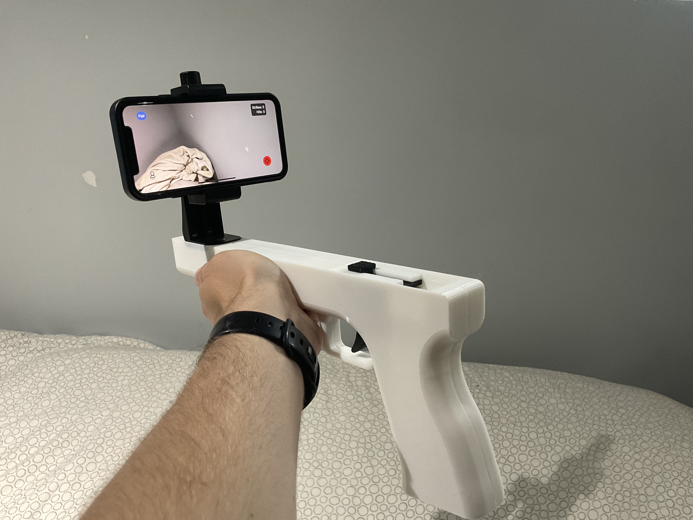
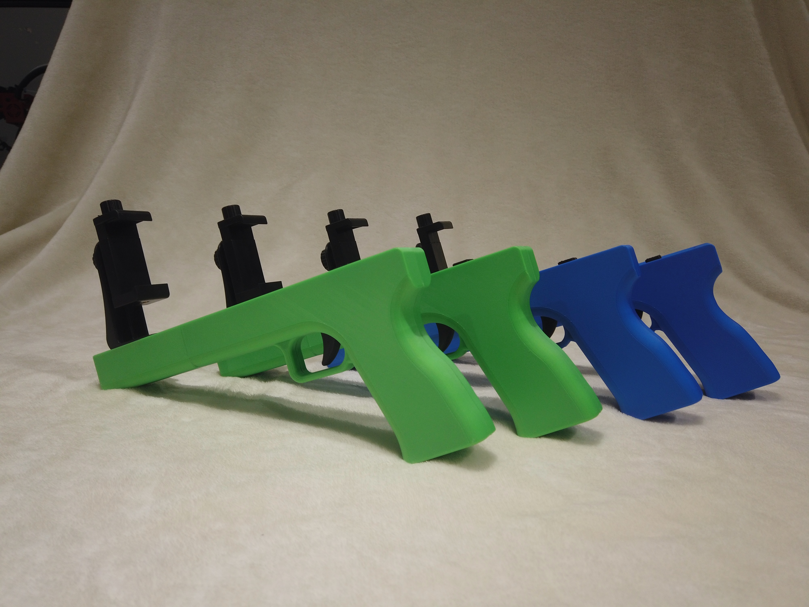
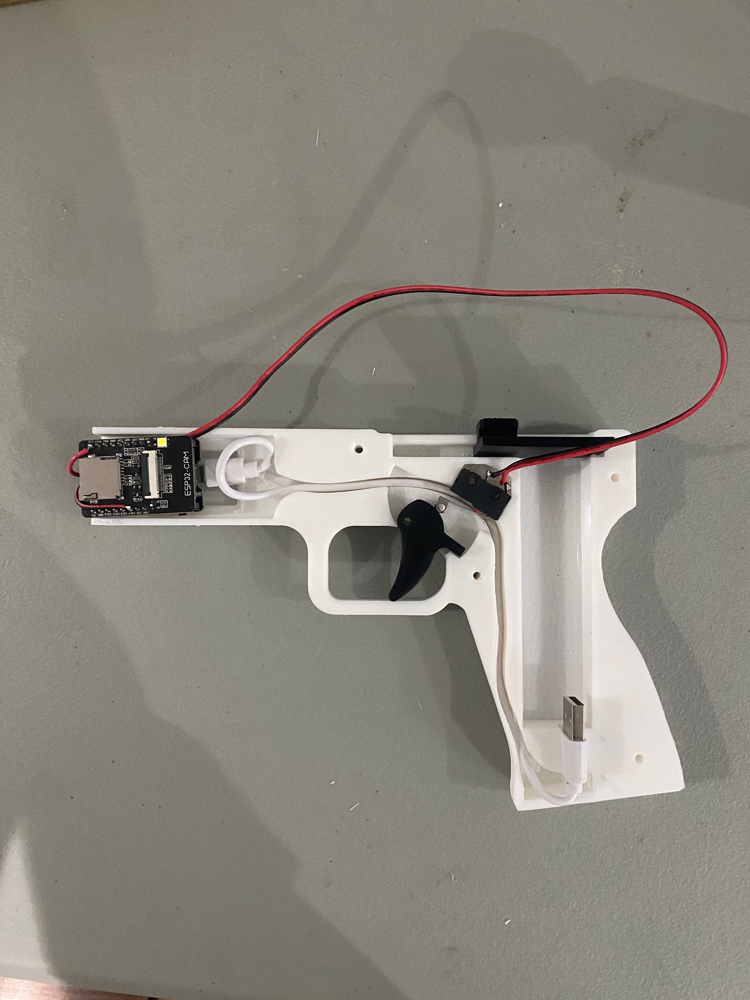
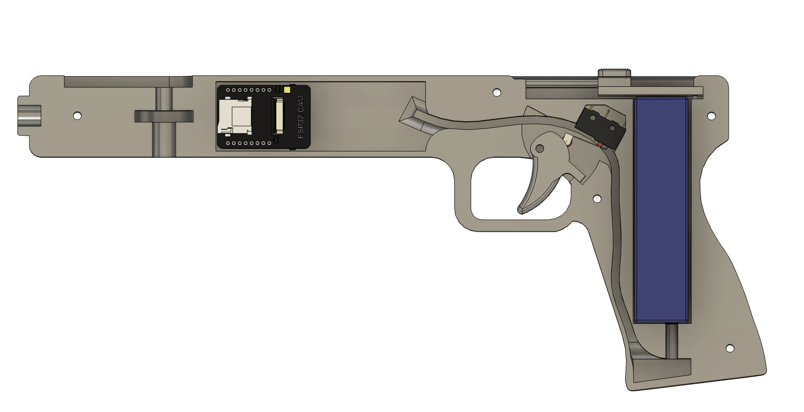
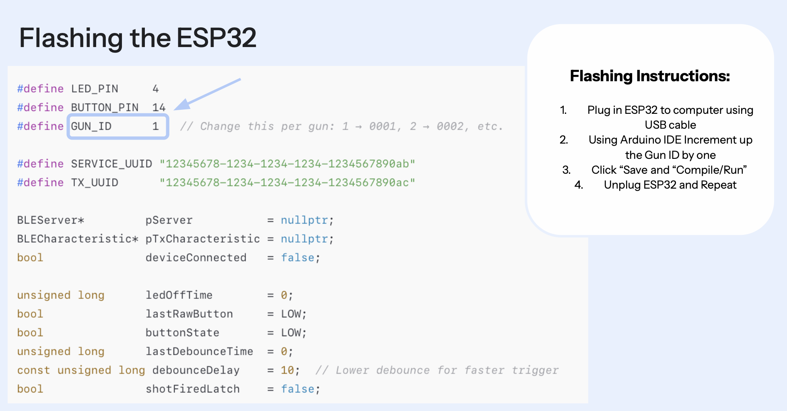
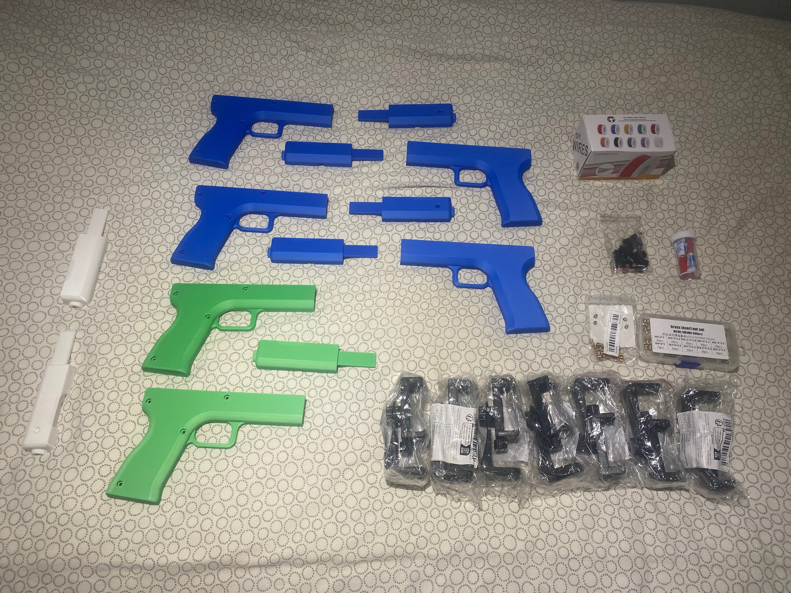
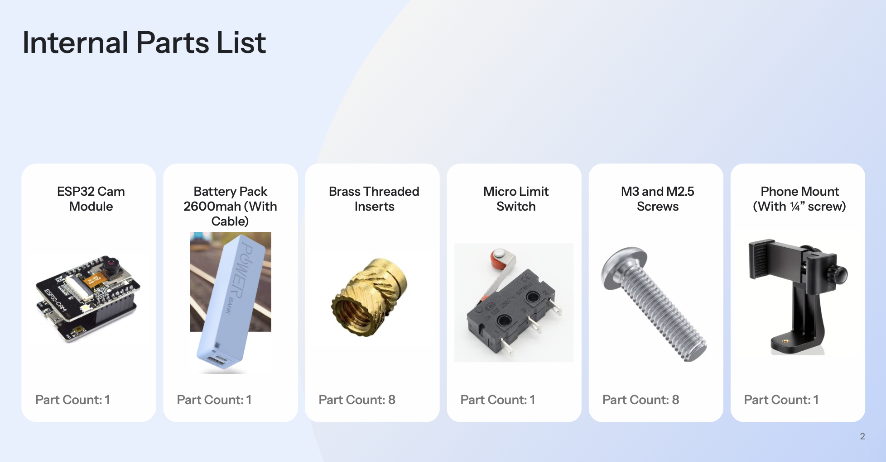
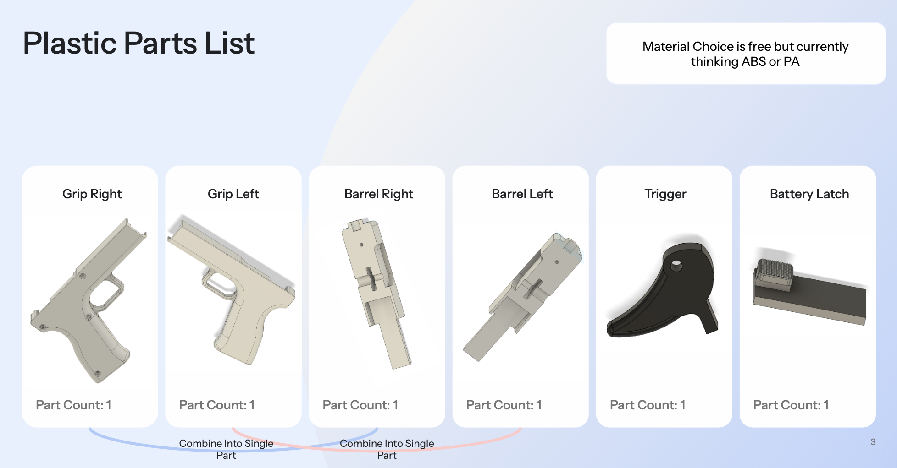

Embedded Systems · BLE gun controller designed for mass production

Designed and built a production-ready gun-shaped controller for WarStrike — a first-person shooter iOS game. The controller mounts an iPhone on a barrel rail and uses a physical trigger wired to an ESP32 that communicates with the game over Bluetooth Low Energy. Took it from first prototype through firmware, full BOM, assembly documentation, and a China manufacturing pipeline.
Multiple colorway iterations 3D printed in PLA to validate the enclosure geometry and ergonomics before finalizing for production.

ESP32-CAM module handles Bluetooth communication. Trigger pull actuates a micro limit switch — debounced in firmware at 10ms for fast, reliable shot detection. Each unit is flashed with a unique Gun ID so multiple controllers pair independently.


Production flashing guide designed so assembly staff can program each unit without engineering involvement — increment Gun ID per unit, compile and flash via Arduino IDE.

Full BOM covering all internal electronics and plastic enclosure parts, with supplier links and per-unit cost breakdowns. Plastic parts designed for ABS or PA injection molding — grip halves and barrel halves each consolidate into single parts for tooling efficiency.


